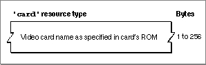

Legacy Document
Important: The information in this document is obsolete and should not be used for new development.
Important: The information in this document is obsolete and should not be used for new development.


The Card Resource
A card resource specifies a video card's name. A card resource is a resource of type'card'and must have a resource ID within the range -4080 through -4065. A card resource contains a Pascal string--that is, a length byte followed by an ASCII string--identical to the name of a video card. The name of a video card is located in the ROM of the card, as described in Designing Cards and Drivers for the Macintosh Family, third edition. Figure 8-19 shows the structure of a compiled card resource.Figure 8-19 Structure of a compiled card (
'card') resource Because a monitors extension file can contain as many card resources as you wish, one extension file can handle several types of video cards. The Options dialog box displays the name in the card resource unless you also include a string (
'STR#') resource in the extension file. For more information about the string resource, see "Providing an Alternative Name for a Video Card" on page 8-58.